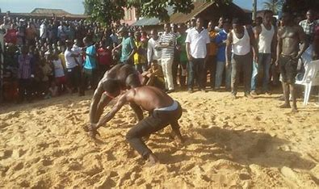
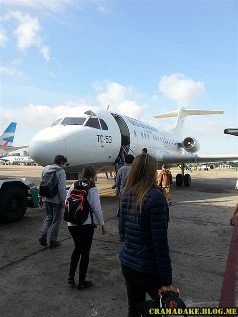
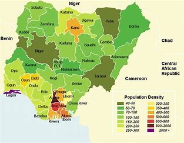

Meeting Funmy
About me
Hello my name is Funmilayo, i hail from Ibusa. Ibusa is one of the towns in Delta state. Delta state is in Nigerian and Nigeria is in the western coast of Africa.
I love meeting new people with a similiar mind and vibe that's worth my time. It's always nice exploring inner personalities. We are four people from different countries and with different background. What do we actually have in common? To discover what we have in common i have to make friends with, talk more with them and work as a team with them. Sometimes it can be very difficult to work with people you barely know but it's mandatary. I have to discover how to work with them and get the necessary information i need for this webpage. While discovery my new friends, i am also exploring my world of web development and web design.Enjoy my new talent.
Home
No matter what ‘home’ means to you, there is surely something nostalgic about the place we call home. It’s the place where we eat, the place with friends and family, where we enjoy our home goods and traditions, and it’s the place we make our own. Sometimes in life we could use a little reminder of how it feels to be home, to come home, and to leave home. There’s no place like home. Just Remembering our traditional wresting festival.
Hobbies
I have a lot of hobbies but traveling keeps me active in my spare time. I think a person finds satisfaction when he becomes free from the tedious schedule; mentally and physically. Every person needs a break from the daily work. Traveling occupies this break in a good manner.Traveling involves everything, adventure, fun, excitement and lots more. I have selected traveling as my favorite hobby only because it gratifies all requirements of a good hobby. I see traveling as an enthralling education. It offers stimulant to my intellect, soul and body.Whenever I visit any unknown place I never drop the opportunity of enjoying famous food items of that place. I think food speaks more about the place and people living there. I also watch for the dressing style of the people, for every country or continent has their unique dressing style.
Interest
My interest in life drives on money and making people happy. Empowering others, having an empire and building a legacy for myself and my childeren. Cool!
Likes
I like traveling, sporting, trying different delicacies, making money and spending(investing) money. I like shopping, listening to music and responding to music.
Dislikes
I am not use to house pets.
Country
Nigeria is my home.
